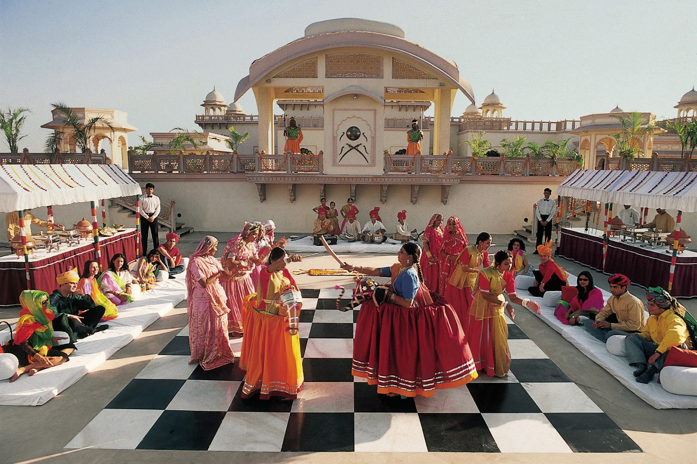

<div class="container project-view">
    
	<div class="row">
        <div class="col-md-8 project-images">
            
            
            
            
            
            
            
            
        </div>
        <div class="col-md-4">
            <div class="project-info">
                <h2>Taj Hari Mahal &amp; Spa</h2>

                <div class="details">
                    <div class="info-text">
                        <span class="title">Location</span>
                        <span class="val">Jodhpur, Rajasthan</span>
                    </div>

                    <div class="info-text">
                        <span class="title">Category</span>
                        <span class="val">Luxury Wedding</span>
                    </div>
                </div>

					A resort with top of the line luxurious amenities, Taj Hari Mahal pulls out all stops for an enchanting vacation in Jodhpur, India’s exotic ‘Blue City’, the second largest in Rajasthan. 
					<br/><br/>
					Spread over six acres of landscaped lawns and manicured gardens, Taj Hari Mahal celebrates the grandeur of Rajput and Mughal architecture, 
					from its arch-shaped swimming pool, beguiling frescoes, latticed windows and flower-strewn water fountains to miniature artwork and jewel-toned furnishings inside the plush suites. 
					<br/><br/>
					Gourmands are spoilt for choice at our restaurants which serve the most spectacular Chinese meals in the city, haute global cuisine and iconic local delicacies like dal baati and 
					Jodhpuri maas, paired with world-class wines. Fitness enthusiasts can balance these indulges with workouts at our state-of-the-art fitness center, 
					followed by a wellness treatment at the the Spa. The palace’s contemporary meeting venues are ideal for business conferences as well as glamorous soirees, making us your premier choice for a rendezvous with Jodhpur. 
					            
			</div>
        </div>
    </div>
</div>